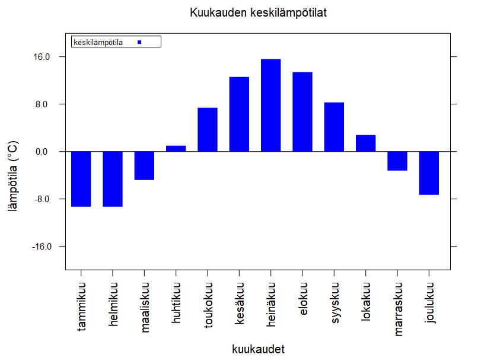
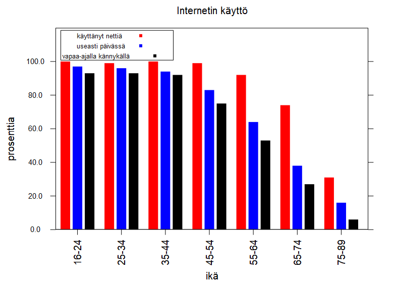
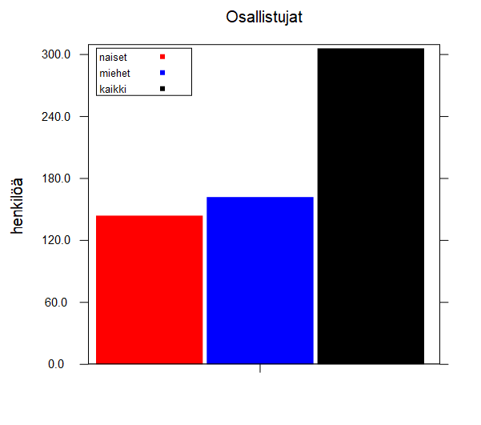

6.4
7.2 Pylväsdiagrammit (bar-chart)
procedure
(serie arvot väri selite) → funktio
arvot : lista<number?> väri : image-color? selite : merkkijono
Määrittelee piirrettävien pylväiden korkeudet listana arvot. Lisäksi annetaan pylvässarjan
väri sekä selite.
procedure
(bar-chart sarjat kategoriat y0 yn x-teksti y-teksti otsikko) → kuva sarjat : serie/lista<serie> kategoriat : lista<number?/string?> y0 : reaaliluku yn : reaaliluku x-teksti : merkkijono y-teksti : merkkijono otsikko : merkkijono
Piirtää yhden tai useamman sarjan pylväitä (sarjat). x-akselille tulevat kategoriat
annetaan listana merkkijonoja tai lukuja. y-akselin korkeutta voi säätää antamalla y:n rajat y0-yn.
Functiolle annetaan lisäksi x- ja y-akselien nimet x-teksti ja y-teksti sekä kuvan otsikko otsikko. bar-chart palauttaa kuvan.
(bar-chart (serie (list -9.3 -9.3 -4.8 1.0 7.4 12.6 15.6 13.4 8.3 2.8 -3.2 -7.3) "blue" "keskilämpötila") (list "tammikuu" "helmikuu" "maaliskuu" "huhtikuu" "toukokuu" "kesäkuu" "heinäkuu" "elokuu" "syyskuu" "lokakuu" "marraskuu" "joulukuu") -20 20 "kuukaudet" "lämpötila (°C)" "Kuukauden keskilämpötilat")

(bar-chart (list (serie (list 100 99 100 99 92 74 31) "red" "käyttänyt nettiä") (serie (list 97 96 94 83 64 38 16) "blue" "useasti päivässä") (serie (list 93 93 92 75 53 27 6) "black" "vapaa-ajalla kännykällä")) (list "16-24" "25-34" "35-44" "45-54" "55-64" "65-74" "75-89") 0 120 "ikä" "prosenttia" "Internetin käyttö")

(bar-chart (list (serie (list 144) "red" "naiset") (serie (list 162) "blue" "miehet") (serie (list 306) "black" "kaikki")) (list "") 0 310 "" "henkilöä" "Osallistujat")
